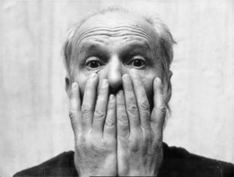
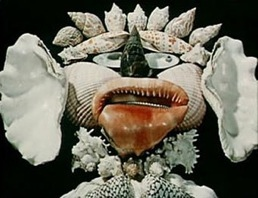

Jan i Ewa Svankmajer
Dlaczego Svankmajer?
Wieczór czeskiego surrealisty i wielkiego mistrza filmu, Jana Svankmajera to dla nas pretekst omówienia aktualności pewnych podstaw myślenia, które stały się inspiracją dla surrealizmu (mam tu na myśli przede wszystkim rolę wyobraźni).
Svankmajer – jak sam o sobie mówi – to surrealista walczący – i chciałbym zachęcić do zastanowienia dlaczego, jakie okoliczności sprawiły, że ten twórca musiał się w taki sposób nastawić. Czy to aby nie deprecjonowanie roli wyobraźni we współczesnej kulturze? Być może tak naprawdę nie odrobiliśmy lekcji surrealizmu? A może w końcu, tak ekstremalnie aktywne, energetyczne, walczące podejście ma jedynie szansę powodzenia, tak przecież przebijał się surrealizm w pierwszym okresie, zwanym przez Bretona rewolucją surrealistyczną. Niektórzy twierdzą, że na Zachodzie surrealizm przeszedł płynnie w pop i nie poszedł w subwersję, nie wykorzystał wielu swoich potencjalnych sił. Trudno powiedzieć jak w istocie się stało. Chciałbym korzystając z okazji podkreślić, że podobnie jak rewolucja seksualna, przemiana surrealistyczna nie jest wcale „za“ nami. Jest jeszcze przed nami.
Po drugie, przypadek Jana Svankmajera wydaje mi sie stanowić rzadki przykład twórcy-alchemika, który oficjalnie będąc animatorem, jak mówią wtajemniczeni, tak naprawdę zajmuje się czym innym: magią, a kino traktuje raczej jak szaman niż reżyser. Odwiedzając galerię Svankmajera za Hradczanami w Pradze już po samych zalegających w każdym koncie wydawnictwach można przekonać się, że odwołania do źródeł okultystycznych są bardziej niż zasadne.
Co może znaczyć dla niego tradycja alchemiczna? Czescy przyjaciele stworzyli obraz Svankmajera – „alchemika animacji“, który nie tylko wprost odwołuje się do czasów cesarza Rudolfa II, ale także dedykuje mu – jako mecenasowi antydogmatycznych badań magicznych – jeden ze swoich najważniejszych filmów. W dokumencie biograficznym Svankmajer komentuje to zagadnienie bezpośrednio: „Dla mnie film animowany to magia. Mnie film animowany jako całość nie interesuje. Mnie zajmuje wyłącznie techniczny aspekt rzemiosła, w relacji do tego, co chcę przedstawić“.
Wraz z niedawno zmarłą żoną Evą Svankmajerową, w artystycznym twórczym duecie, tworzył ponad 50 lat. Urodził się 4 września 1934 roku w Pradze. Zaczynał od rzeźby, potem poszedł w teatr – najpierw Teatr Czarny, potem Teatr Laterna Magica. Od lat 60 tych związał się z tak zwanym Czeskim Ruchem Surrealistycznym, któremu przewodził teoretyk Vratislaw Effenberger. Wstrzymywany przez cenzurę nie mógł Svankamajer pokazywać swoich filmów publicznie, zamknął się więc w pracowni i poświęcił pracy studyjnej, idealnej dla spokojnego rytmu tworzenia żmudnej poklatkowej animacji. W efekcie prac nad techniką i zrealizowane zostały 32 filmy, w tym 6 pełnometrażowych: “Coś z Alicji” (na podstawie Carrola Lewisa), “Lekcja Fausta”, “Spiskowcy Rozkoszy”, “Mały Otik”, a w 2005 “Szaleni”.
Dopiero w ostatnim czasie Svankmajer jest obecny na przekrojowych wystawach sztuki surrealistycznej i w omówieniach historii surealizmu. Powołują się na niego bracia Quay, Tim Barton, Terry Gilliam, twierdząc, że Svankmajerowi zawdzięczają bardzo wiele, jeśli nie wszystko.
Svankmajer od wielu lat otwarcie narzeka, że surrealizm jest dla większości jednym z wielu kierunków w sztuce awangardowej, jakim jest na przykład kubizm czy impresjonizm, i przestają się nim interesować.
W rzeczywistości jest to oczywista bzdura. Surrealizm to nie kierunek w sztuce, i to chciałbym korzystając z okazji podkreślić. „Surrealizm to nie estetyka, to filozofia“ – mówi Svankmajer. Jego filmy pokazują, że surrealizm jest także pewnym rodzajem wrażliwości. W tym sensie Svankmajer nie jest, jak piszą niektórzy, „ostatnim surrealistą“ ani „surrealistą po surrealizmie“.
Takie fakty historyczne jak klasyczna sztuka surrealistyczna, w tym filmy Jana Svankmajera, ale także istnienie Biura Poszukiwań Surrealistycznych Antonina Artaud czy obok surrealizmu – surracjonalizm, idea opisana przez Gastona Bachelarda, bez której nie ma wielkich szans na rozwój nauki – to wszystko może stanowić ożywcze źródło naszych działań twórczych, do czego wszystkich zachęcam.
Jan Przyłuski